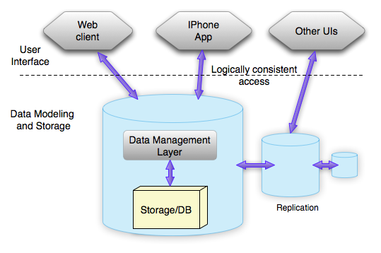
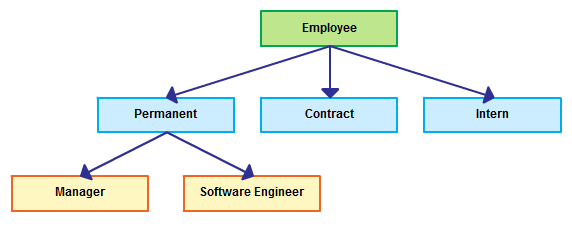
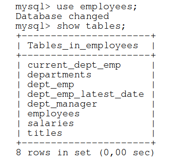

Keyboard shortcuts:
N/СпейсNext Slide
PPrevious Slide
OSlides Overview
ctrl+left clickZoom Element
If you want print version => add '
?print-pdf' at the end of slides URL (remove '#' fragment) and then print.
Like: https://wwwcourses.github.io/...CourseIntro.html?print-pdf
Introduction
Created for
Created by
Course Intro
About me
Name: Iva E. Popova
- First PC: Pravetz 8А
- First OS: DOS
- First Programming Language: BASIC
- Education:
- Technical schools: UKTC in Pravetz
- Dipl. eng. (master) in Computer Systems and Technologies, TU-Sofia
- PhD. Artificial Intelligence Systems
Tech skills
- Python, JavaScript, Perl, C++, Prolog.
- Web Programming:
- Front-end: React, Vue, Svelte
- Back-end: Django, Flask, fastAPI
- GraphDB, MongoDB, MySQL/PostgreSQL.
- Machine Learning/ NLP, Sentiment Analyses
- RDF, WordNet.
- Knowledge representation, ontologies.
Teaching Experience
- Technical University in Sofia:
- Programming languages
- Internet Programming
- Discrete Mathematics
- Artificial Intelligence and Expert Systems
- Private educational centers:
- MySQL
- Python
- Machine Learning with Python
- Web Development (Front-end and Back-end)
Professional Experience
Course Resources
Course Email
ProgressBG.WWW.Courses@gmail.com
- ask any questions
- give any feedback
Course labs GitHub repo
- MySQL_DCA_Labs
- All live examples/demos written by me during the lab will be uploaded to the course GitHub repo immediately after the labs.
Introduction to DB
Introduction to DB
What is DB and why we need it?
{kind=link}
- Definition:
- DBDataBase
- A structured set of data, organized to provide efficient retrieval.
- Rationale:
- A DB should be able to serve multiple users (clients) simultaneously.
- A DB should be used for more than one task.
Types of Data Bases

- Relational (SQL)
- Data are stored as relational tables
- Data manipulations are done by Structured Query Language (SQL), based on Edgar Frank Codd’s work on the relational model for database management
- Non-Relational (noSQL)
- Developed in the late 2000s
- Have flexible data models
- Focus on scaling, fast queries, allowing for frequent application changes, and making programming simpler for developers.
Data Models
Definition
A data model is a collection of high-level data description constructs that hide many low-level storage details.

Hierarchical database model
Each child have only one parent.
Network database model
A child can have multiple parents.
Graph database model

A graph database stores nodes and relationships instead of tables, or documents.
Relational database model

The central construct is a relation(table), which can be thought of as a set of tuples (rows) which shares common attributes(columns) .
Object-oriented database model
Ease the modeling of complex data structures with many-to-many relationships, by inheritance, data encapsulation
Document database model
Document databases store data in objects that can be deeply nested and can consist of arbitrary fields.
Relational DB Model Overview
Definition
- A Relational Database is a collection of one or more tables, where each table isa relation between rows and columns.
- A relation consists of a relation schema and a relation instance.
- Relation instance - a table with rows and columns.
- Relation schema - describes the column heads for the table.
Key Concepts
- Table - represents a Relation.
- Table and relation are synonymous in DB context.
- A relation is different from relationship between tables.
- A table consists of rows and columns, like a simple spreadsheet.
- Each table is a set of unique rows.
- Row (Tuple, Record)
- Represents a collection of related values (characteristic) of an entity.
- Column (Field, Attribute )
- One column contains data of one and the same type, as defined in schema.
Key Concepts

Tables Relationships
- One to one relationship
- Example: Customer -> Address
- One to Many/Many to One relationship
- Example: Customer -> Orders
- Many to Many relationship
- Examples: Orders -> Items
- Self Referencing relationship
- Customer -> Customer (like in referral program)
These concepts will be discussed further.
ExampleDatabase
Example Table

Popular Relationship Database Management System (RDBMS)
- Commercial:
- Oracle, Microsoft SQL Server, SAP SyBase
- Free (under GPL)
- MySQL/MariaDB, PostgreSQL, SQLite
RDBMS - Basic Concepts
Data Definition Language (DDl)
- DDL helps you to define the database structure or schema
- Some common DDL Commands are
- CREATE, ALTER, DROP, TRUNCATE, etc.
- Changes are saved in the database immediately and permanently.
Data Manipulation Language (DML)
- The DML is the programming language used to express operations that interrogate or update the data in the database
- DML commands are used to manage the data stored in the database, like
- INSERT, UPDATE, DELETE, MERGE, CALL, etc.
Setup MySQL Tools
Setup MySQL
Install on Windows
- Installing MySQL on Microsoft Windows @https://dev.mysql.com/
- Download: MySQL Community Downloads
- It is more flexible to choose the web-community version that does not bundle any MySQL applications, but downloads only the MySQL products you choose to instal
- For start we need only MySQl Server, MySQL Workbench and MySQL Shell
- so on "Choosing a Setup Type" window select "Custom".
- reference: 2.3.3.1 MySQL Installer Initial Setup
Install on Windows - choose Setup Type
{kind=link}
Install on Windows - Select Products
{kind=link}
Install on MacOS
Install on Linux
- Installing MySQL on Linux @https://dev.mysql.com/
- APT repos for all mysql-apt-config versions: https://repo.mysql.com/apt/ubuntu/pool/mysql-apt-config/m/mysql-apt-config/
- If you have problems on old linux version, you can try installing MariaDB
- https://downloads.mariadb.org/mariadb/repositories
- Check the installation:
systemctl status mysql
# ● mariadb.service - MariaDB 10.2.38 database server
# Loaded: loaded (/lib/systemd/system/mariadb.service; enabled; vendor preset: enabled)
# Drop-In: /etc/systemd/system/mariadb.service.d
# └─migrated-from-my.cnf-settings.conf
MySQL Workbench
- MySQL Workbench is a unified visual tool for database architects, developers, and DBAs.
- Official site: www.mysql.com/products/workbench
- If after installation of mysql server you don't have MySQL Workbench, you can download it from:
- Download MySQL Workbench
mycli (optional)
- mycli: A Terminal Client for MySQL with AutoCompletion and Syntax Highlighting
- Official site: mycli
- Requires python

Employees Sample Database
- The database contains about 300,000 employee records with 2.8 million salary entries.
- The export data is 167 MB, which is not huge, but heavy enough to be usefull for testing.
- Install: Employees Sample Database
Test the installations
MySQL Client
### the client:
mysql --version
# mysql Ver 14.14 Distrib 5.7.11, for Linux (x86_64) using EditLine wrapper
### the server:
mysqld --version
# mysqld Ver 5.7.11 for Linux on x86_64 (MySQL Community Server (GPL))
### the workbench
mysql-workbench --version
# Found /usr/lib/x86_64-linux-gnu/libproj.so.9
# MySQL Workbench CE (GPL) 6.3.10 CE build 12092614
Add mysql path to Windows PATH env. variable
- If after the successful installation, your 'mysql' command is not recognized, then you have to add it to Windows Path
- Follow next instructions: Customizing the PATH for MySQL Tools
- Or this one: How to fix MySQL not recognized Windows error
Start/stop MySQL Server
Windows
- Open Run Window by Winkey + R
- Type services.msc
- Search MySQL service based on version installed.
- Click stop, start or restart the service option.
- Or you can start/stop MySQL from the command prompt:
- Reference: Starting MySQL as a Windows Service
C:\> "C:\Program Files\MySQL\MySQL Server 8.0\bin\mysqld"
C:\> "C:\Program Files\MySQL\MySQL Server 8.0\bin\mysqladmin" -u root shutdown
Linux
service mysql start
service mysql stop
service mysql restart
- Or if you have the old init.d
/etc/init.d/mysqld start
/etc/init.d/mysqld stop
/etc/init.d/mysqld restart
Connect to MySQL Server
Connect to MySQL Server
MySQL client
# connect to local mysql, using the root account:
mysql -u root -p
# Enter password:
# ...
# Welcome to the MariaDB monitor. Commands end with ; or \g.
# Your MariaDB connection id is 14
# Server version: 10.2.38-MariaDB-10.2.38+maria~xenial-log mariadb.org binary distribution
# Copyright (c) 2000, 2018, Oracle, MariaDB Corporation Ab and others.
# Type 'help;' or '\h' for help. Type '\c' to clear the current input statement.
# MariaDB [(none)]>
MySQL server - where my DB are stored?
- All MySQL databases are stored in directories inside a MySQL DATADIR directory.
- E.g. myExampleDB’s files would be stored inside ‘$DATADIR/myExampleDB’ directory.
- MySQl DATADIR is specified in the config file, but can be easily retrieved by:
mariadb root@localhost:(none)> select @@datadir
+-----------------+
| @@datadir |
|-----------------|
| /var/lib/mysql/ |
+-----------------+
1 row in set
Time: 0.002s
These slides are based on
customised version of
framework